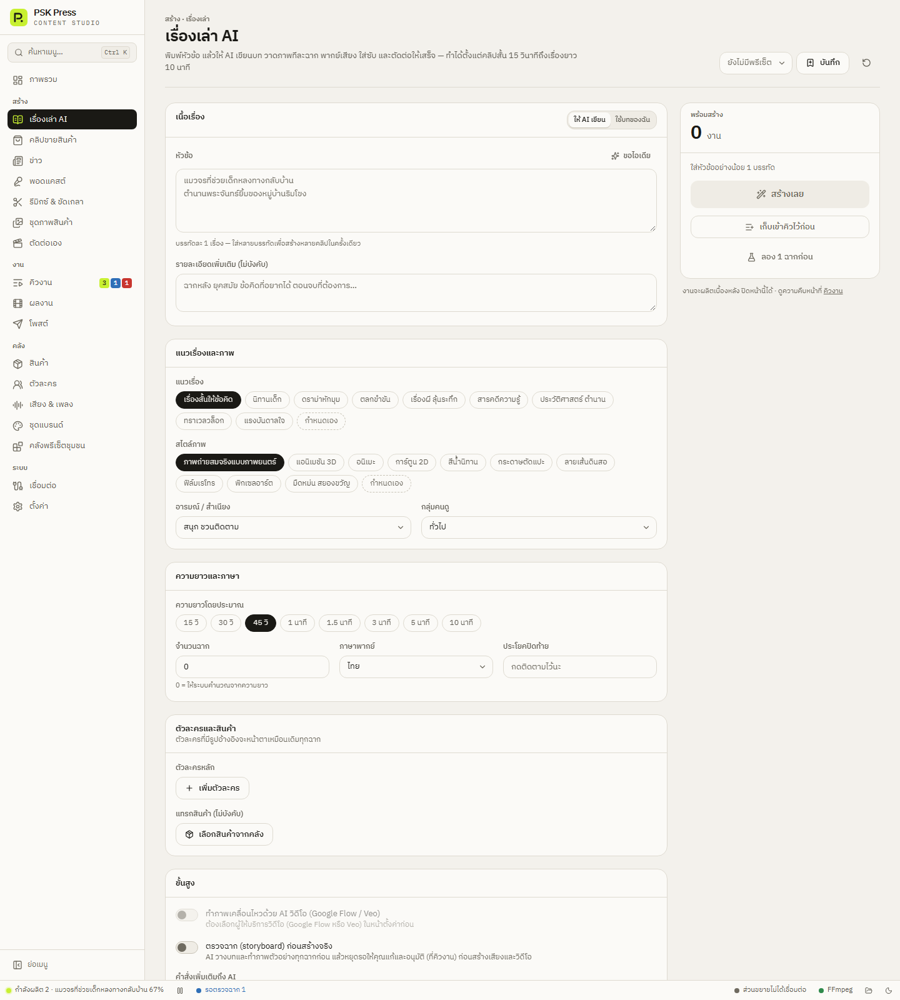

สร้างงาน
เรื่องเล่า AI
พิมพ์หัวข้อ แล้วให้ AI เขียนบท วาดภาพทีละฉาก พากย์เสียง ใส่ซับ และตัดต่อให้เสร็จ — ตั้งแต่คลิปสั้น 15 วินาทีถึงเรื่องยาว 10 นาที


1. เนื้อเรื่อง
เลือกโหมดที่หัวแผง:
ให้ AI เขียน (ค่าเริ่มต้น)
- หัวข้อ — บรรทัดละ 1 เรื่อง ใส่หลายบรรทัดเพื่อสร้างหลายคลิปในครั้งเดียว กด ขอไอเดีย ให้ AI เสนอหัวข้อ
- รายละเอียดเพิ่มเติม (ไม่บังคับ) — โครงเรื่อง ตอนจบที่อยากได้ ข้อเท็จจริงที่ต้องมี
ใช้บทของฉัน
วางบทพากย์ใน บทพากย์ แล้วแยกฉากด้วยบรรทัดว่าง AI จะคิดภาพให้ตรงกับแต่ละฉาก โดยไม่แก้คำพูดของคุณ
2. แนวเรื่องและภาพ
| ช่อง | ตัวเลือก (ค่าเริ่มต้นตัวหนา) |
|---|---|
| แนวเรื่อง | เรื่องสั้นให้ข้อคิด, นิทานเด็ก, ดราม่าหักมุม, ตลกขำขัน, เรื่องผี ลุ้นระทึก, สารคดีความรู้, ประวัติศาสตร์ ตำนาน, ทราเวลวล็อก, แรงบันดาลใจ, กำหนดเอง |
| สไตล์ภาพ | ภาพถ่ายสมจริงแบบภาพยนตร์, แอนิเมชัน 3D, อนิเมะ, การ์ตูน 2D, สีน้ำนิทาน, กระดาษตัดแปะ, ลายเส้นดินสอ, ฟิล์มเรโทร, พิกเซลอาร์ต, มืดหม่น สยองขวัญ |
| อารมณ์ / สำเนียง | สนุก ชวนติดตาม, อบอุ่น ซึ้ง, ตื่นเต้น ลุ้นระทึก, ขำขัน กวน ๆ, จริงจัง น่าเชื่อถือ, ลึกลับ, อีสาน, คำเมือง, ปักษ์ใต้ |
| กลุ่มคนดู | ทั่วไป, วัยรุ่น, วัยทำงาน, แม่บ้าน ครอบครัว, ผู้สูงอายุ, เด็ก |
3. ความยาวและภาษา
- ความยาวโดยประมาณ — 15 วิ, 30 วิ, 45 วิ, 1 นาที, 1.5 นาที, 3 นาที, 5 นาที, 10 นาที ตั้งแต่ 3 นาทีขึ้นไป เรื่องจะมีหลายสิบฉาก ใช้เวลาและเครดิต AI มากขึ้น
- จำนวนฉาก — 0 = คำนวณจากความยาวให้ (ประมาณฉากละ 8 วินาที)
- ภาษาพากย์ — ไทย, English, 中文, 日本語, Tiếng Việt
- ประโยคปิดท้าย — เช่น “กดติดตามไว้นะ” AI จะจบฉากสุดท้ายด้วยประโยคนี้
4. ตัวละครและสินค้า
- ตัวละครหลัก → เพิ่มตัวละคร — เลือกจาก คลังตัวละคร ตัวละครที่มีรูปอ้างอิงจะหน้าตาเหมือนเดิมทุกฉาก ชื่อตัวละครใช้ในบทพูดเท่านั้น ส่วนคำสั่งวาดภาพจะใช้ลักษณะภายนอกแทนชื่อ
- แทรกสินค้า (ไม่บังคับ) → เลือกสินค้าจากคลัง แล้วเลือกวิธีแทรก:
- วางเป็นฉากหลัง — เห็นสินค้าในฉากหลัง 1–2 ฉาก ไม่พูดถึง
- ตัวละครใช้/ถือ — ตัวละครใช้หรือถือสินค้า ไม่พูดถึงตรง ๆ
- พูดถึงตอนท้าย — พูดถึงสั้น ๆ อย่างเป็นธรรมชาติช่วงท้าย
- โชว์ + แนะนำ — โชว์การใช้งานและจบด้วยคำแนะนำสั้น ๆ
- ใช้วิดีโอสินค้าเป็นฉาก — ถ้าสินค้ามีวิดีโอ
5. ขั้นสูง
- ทำภาพเคลื่อนไหวด้วย AI วิดีโอ (Google Flow / Veo) — ทำทุกฉากเป็นคลิปวิดีโอ พอเปิดสวิตช์นี้ “ตรวจฉาก” จะเปิดให้อัตโนมัติ ดู คลิป AI ด้วย Google Flow
- ตรวจฉาก (storyboard) ก่อนสร้างจริง — AI วางบทและทำภาพตัวอย่างทุกฉากก่อน แล้วหยุดรอคุณแก้และอนุมัติ
- คำสั่งเพิ่มเติมถึง AI
ถ้าไม่เปิดคลิป AI ทุกฉากจะเป็นภาพนิ่งที่ขยับช้า ๆ (ซูมเข้า-ออก) พร้อมเสียงพากย์และซับ ประหยัดและเร็วที่สุด
ส่วนการตกแต่ง ดู การตกแต่งและส่งออก
ตัวอย่างการใช้งาน
- นิทานก่อนนอน 10 เรื่องในครั้งเดียว — แนวเรื่อง “นิทานเด็ก” สไตล์ “สีน้ำนิทาน” อารมณ์ “อบอุ่น ซึ้ง” ใส่ชื่อนิทาน 10 บรรทัด ความยาว 1 นาที
- สารคดีสั้นช่องความรู้ — แนวเรื่อง “สารคดีความรู้” สไตล์ “ภาพถ่ายสมจริงแบบภาพยนตร์” เปิดซับแบบไฮไลต์คำ ใส่ฮุคให้ AI เขียน
- เรื่องผีภาษาอีสาน — แนวเรื่อง “เรื่องผี ลุ้นระทึก” อารมณ์ “อีสาน” สไตล์ “มืดหม่น สยองขวัญ”